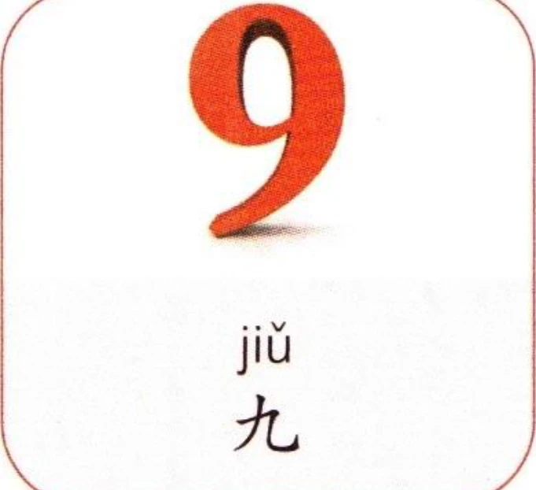
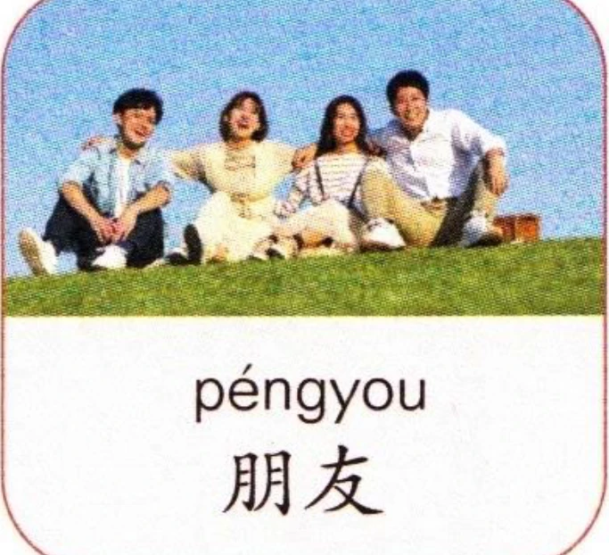
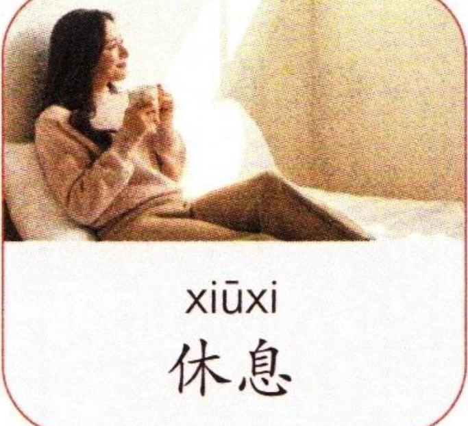

(2)声母“j、q、x”和韵母“ü”相拼的规则Rule for combining the initials “j”, “q”, and “x” with the final “ü”Правило сочетания инициалей “j”, “q”, “x” с финалью “ü”
声母“j、q、x”和韵母“ü”相拼时，“ü”上边的两点儿省略，写作“u”。When the initials “j”, “q”, and “x” combine with the final “ü”, the two dots of “ü” are omitted, and it is written as “u”.Когда инициали “j”, “q” и “x” сочетаются с финалью “ü”, две точки над “ü” опускаются, и она пишется как “u”.
先跟读音节，再大声朗读。Listen and repeat the syllables, then read aloud.Прослушайте и повторите слоги, затем прочтите вслух.
(3)韵母“iou”单独成音节时的写法Writing the final “iou” as an independent syllableНаписание финали “iou” как самостоятельного слога
韵母“iou”单独成音节时，写作“you”。When the final “iou” stands alone as a syllable, it is written as “you”.Когда финаль “iou” является самостоятельным слогом, она пишется как “you”.
先跟读音节，再大声朗读。Listen and repeat the syllables, then read aloud.Прослушайте и повторите слоги, затем прочтите вслух.
(4)韵母“iou”在音节里的写法Writing the final “iou” in syllablesНаписание финали “iou” в слогах
韵母“iou”和声母“m、d、n、l、j、q、x”相拼时，写作“iu”。例如：“miu、diu、niu、liu、jiu、qiu、xiu”。“iu”的声调要标在“u”上。When the final “iou” combines with the initials “m”, “d”, “n”, “l”, “j”, “q”, and “x”, it is written as “iu”. For example: “miu”, “diu”, “niu”, “liu”, “jiu”, “qiu”, and “xiu”. The tone mark for the “iu” is placed above the “u”.Когда финаль “iou” сочетается с инициалями “m”, “d”, “n”, “l”, “j”, “q” и “x”, она пишется как “iu”. Например: “miu”, “diu”, “niu”, “liu”, “jiu”, “qiu” и “xiu”. Знак тона для “iu” ставится над “u”.
先跟读音节，再大声朗读。Listen and repeat the syllables, then read aloud.Прослушайте и повторите слоги, затем прочтите вслух.
看图片，先跟读音节，再大声朗读。Look at the pictures, listen and repeat the syllables, then read aloud.Посмотрите на картинки, прослушайте и повторите слоги, затем прочтите вслух.


